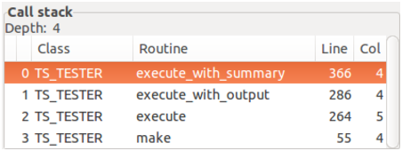

The Call stack part simply contains a table of the nested routine calls leading to the actual stop point.

Figure 5: The Call stack part. The stack level of highlighted row is the one used to select the class in Source part and the data in the Data part.
The table has the following columns:
If the class of a level has been excluded from debugging (i.e. there is only very poor information about the class and the routine) then the class and routine names are struck through. This has no effect on actions available and row, and column numbers are correct anyway.
Left click on a table row selects it: the source code of the class is displayed in the Source part and the values of Current and of the local variables is displayed in the Data part.